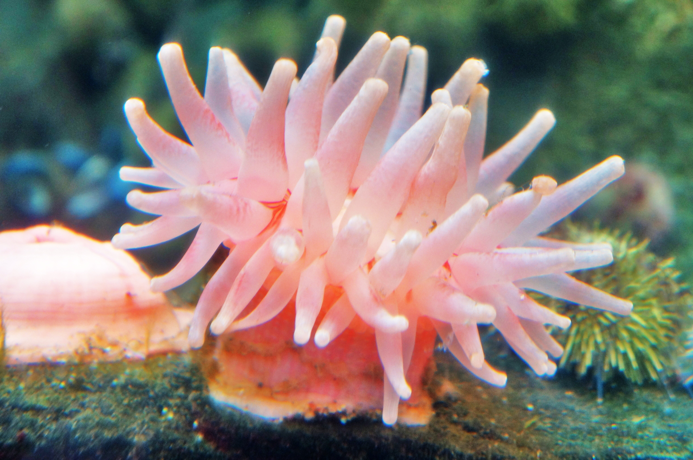
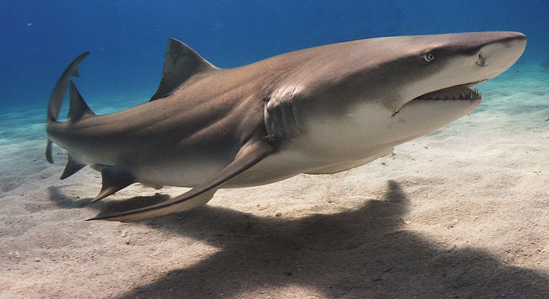
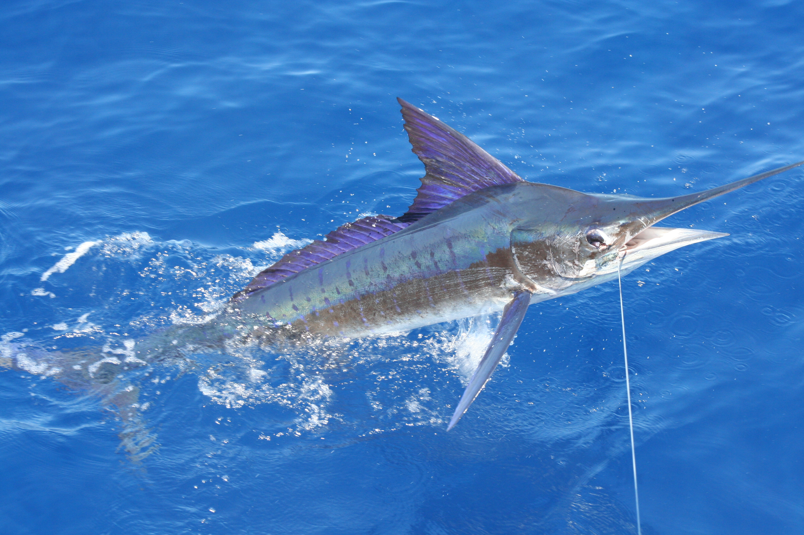
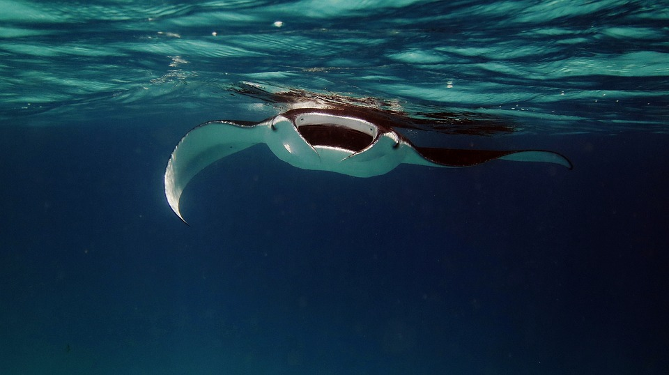
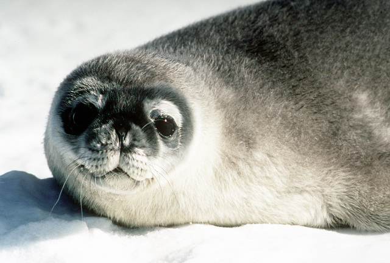

Welcome! As one may know, Marine life is abundant. From Sponges to Marlins, they're never ending, and are vast in numbers. In here, you will be able to find some of my favourite sea animals, and perhaps they will interest you too!
Part of the Cnidaria family, they're invertebrates, animals with no spine. Moreover, they have no skeleton, which can protect them, like other animals can. Described as flower-like and sticky, they come in many colors, and commonly stick themselves to solid surfaces, like seabeds or walls. They may also stick on rocks. They rarely move, but when they do, slide on rocks, and on surfaces, almost like a small ball. Some are even territorial. They live all across the ocean, no specific place to call home. Due to their abundance, some are even in deep, deep areas, living at depths at 10,000m.
Although looking cute, they are very deadly, something you would not expect from their mesmerizing colors and calm demeanour. Their tentacles have poison (a mix of certain toxins), which stings their prey, and then they eat them whole, into their mouth. They can grab any sort of fish, due to their sticky mucus. Thus, it is easy to mistake them as plants, but really they're carnivores.
|  | |
| Source: Jiaqian AirplaneFan. A bright pink sea anemone. 2012. Wikimedia.org. | |
| "https://commons.wikimedia.org/wiki/File:A_bright_pink_sea_anemone_-_panoramio.jpg") | |
| Kingdom | Animalia |
| Phylum | Cnidaria |
They also have their own symbiotic relationships with other animals. For example, clownfishes are not affected by their stinging tentacles, due to the fact they have their own mucus that protects them from the poison of the anemone. This tricks the sea anemones, and provides them with shelter, away from predators that are willing to eat clownfish. The anemone benefits as well, getting any spare food from them. They also cling on to hermit crabs or shrimps. The crabs allow the anemone to latch onto their shell, allowing for protection for the crab, but also free food and transportation for the anemone.
They're quite loved by aquariums, due to the fact that they live for 70-100 years, as well as looking aesthetically pleasing due to their colors. One fascinating one is the venus flytrap anemone. While we regard Venus flytraps as existing only on land, they also exist similarly underwater. They resemble a venus flytrap, and some may think their heads resemble that of an anglerfish.
These animals are very deadly animals, hunters and main predators of the ocean. Sharks in general are cold-blooded, and their temperatures match the water temperatures they're in. They have vertebrates, and have more than 350 species of them. Lemon sharks, like the name suggests, are usually yellowish in color, sometimes yellow-brown and dark yellow colors. Their belly is lighter, a cream color or white, like a lemon meringue. These colors help them hide and camouflage well. They are pretty social creatures, which you may not expect from sharks. Despite their deadly features, they pose no threat to humans. They are the ones hurt by us humans, due to overfishing and loss of habitat.
|  | |
| Source: Albert Kok. 2009. Wikipedia.com. | |
| "https://en.wikipedia.org/wiki/File:Lemonshark.JPG") | |
| Kingdom | Animalia |
| Phylum | Chordata |
Often mistaken for bull sharks, they have big eyes, and a short nose. Their dorsal fins are quite large, and their teeth are long and sharp, like a fork.
That allows them to eat prey like octopus, and other animals easily. They are usually around 7ft long, but can go up to 10ft.
Mostly, they are found in the Atlantic and Pacific oceans.
Living in warmer waters, such that of tropical ones, they are found easily on the sides of Brazil and Ecuador. They are also found in the
on the coasts of west Africa. Good at keeping still, they usually hang around the seafloor and the shores. Sometimes they can be found in bays and
other similar places.
They eat a variety of prey, from crabs to seabirds. They also eat stingrays, smaller sharks, mollusks, and more.
Marlins are an interesting sort. Their name is thought to come from a marlinspike, a tool used by sailors and fishermen. As a fish, they have vertebrates and have gills, and the classic, a scaly body. Marlins themselves are commonly confused with swordfish, due to their long snout. Although from the same family, the Istiophoriformes, there is still many differences to them. Marlins have a longer lifespan, that of 10-20 years, and they prefer to live in warmer waters. Blue marlins are found in the Gulf Stream and striped marlins are found in the Pacific Ocean. In general, they are found in the Atlantic and Pacific Oceans, in the warmer parts, as they keep to the surface.
|  | |
| Source: Jackiemora01. Stripe marlin right off the coast of Carrillo. 2007. Wikimedia.org | |
| "https://commons.wikimedia.org/wiki/File:Stripe_marlin_right_off_the_coast_of_Carrillo.jpg") | |
| Kingdom | Animalia |
| Phylum | Chordata |
They are quite large, around 7-12 ft, and have a long snout. Their upper jaw is the long spear-like snout, and this is what helps catch their prey. They also use it for defense and attacking others. Their dorsal fins are quite small, but they are quite fast, and can jump quite high, especially black marlin. They can jump into the air to escape their attackers, but that has caused them to be a popular fishing game, and thus their populations have decreased significantly. They have a very easy to recognize blue color on the top part of their body.
They eat a variety of food, such as squid, herring, mackerel, and others. They're mostly hunted down by sharks and the sort, in fact we eat them as well.
|  | |
| Source: kevskoot. 2017. Pixabay.com | |
| ("https://pixabay.com/photos/manta-manta-ray-ray-ocean-sea-2064537/") | |
| Kingdom | Animalia |
| Phylum | Chordata |
Despite being fish, they are cartilaginous. They do have vertebrates, but their skeleton is made of cartilage (perhaps similar to the ones in our ears), instead of bones. They are in the same group as sharks and chimaeras. They have very interesting anatomy, especially their mouth. There are 5 pairs of gill arches, which filter food and then it is trapped in their mouth, whilst the rest is filtered out through the slits of the gills. Found in most oceans across the world, they live near the seafloor and seabed.
They have a very intersting shape, flat and broad, with a long tail. Most have long ones, but some can have short ones. They are used like a rudder that is used in boats or airplanes. They can use it for defense and attack, and it depends on each species. Some use their tail, for example that of the stingray, and some can produce electric shocks. Their eyes are on the sides on the horn like parts of it. They are usually brown or black, and the belly, or underside would be lighter. They can reach up to 20 ft in length. Manta rays are the largest rays. Their fins are the large flapping like wings. They use them to flow easily.
They usually eat crabs and krill, as well as shrimps. They are quite smart, and also are prey to larger animals. They're very unique.
|  | |
| Source: The U.S. National Archives. 1985. getarchive.net. | |
| ("https://nara.getarchive.net/media/an-arctic-seal-on-mcmurdo-sound-9f1573") | |
| Kingdom | Animalia |
| Phylum | Chordata |
Arctic Seals are marine mammals. They can live on land for quite a bit and live in water as well. Arctic seals is a broader term for all the seals living in the Arctic. They include harp seals, ringed seals, hooded seals, bearded seals, spotted seals, and more. To be specific, we will discuss Harp Seals. They're quite cute looking as children, and found in the Arctic and North Atlantic oceans. Their name comes from the harp shape marks on their backs.
Harp seals spend more time on sea than on land. They can make distinct sounds, and are a very social bunch. Pups will yell and Adults will growl. Newborn seals are usually yellow, then turn white in color, and they can easily camouflage to avoid predators. Then they will slowly change their colors to that off a silver-gray, and gain the infamous dark spots, that we recognize them by. They are usually 280 pounds when adults. They are great swimmers! They can stay underwater for long periods of time, of course not as much as whales, but still a relatively long time.
They migrate quite a lot as well, and are vulnerable to polar bears, arctic foxes, killer whales, walruses, etc. They are in danger because of us as well. If you want to learn more, head to the Protection page.
FUN FACT: Selkies are a part of mythology that are half human half seal. They are able to shape-shift from those two forms. They are a prominent part of Norse and Celtic mythology. It is said that they are friendly, but can be dangerous as well. Often, if a sailor or someone takes their seal skin, or selkie skin, they will have to marry the human as part of the custom, and then hiding the skin, not allowing them to leave. This a tactic in many stories of coercion. There are many superstitions on this topic as well. If you would like to check out more, check out this website.
Here is a video of a baby Harp Seal making sounds.
{kind=link}
{kind=link}
{kind=link}